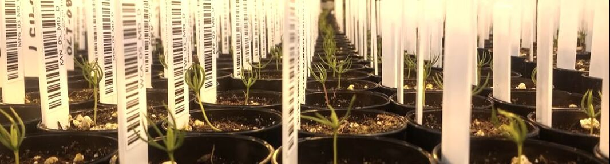
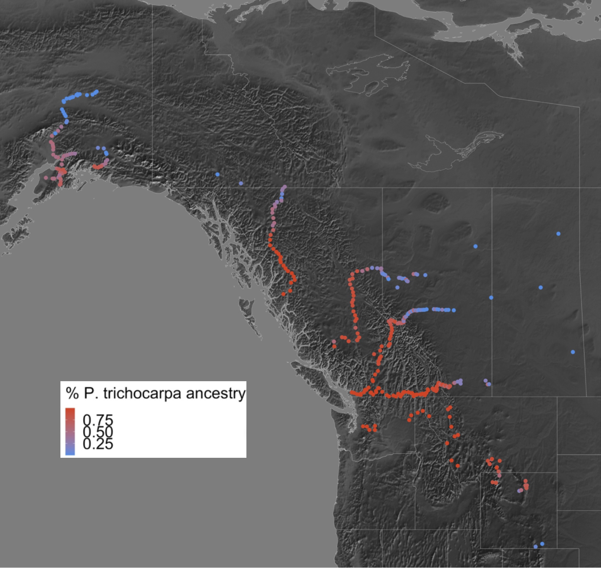
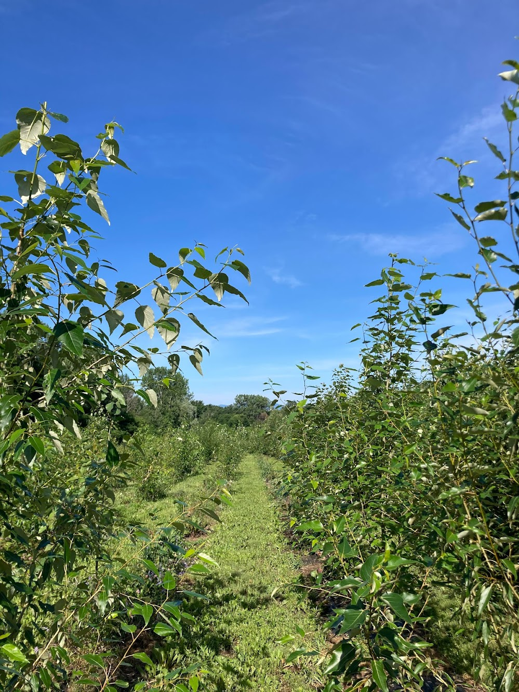
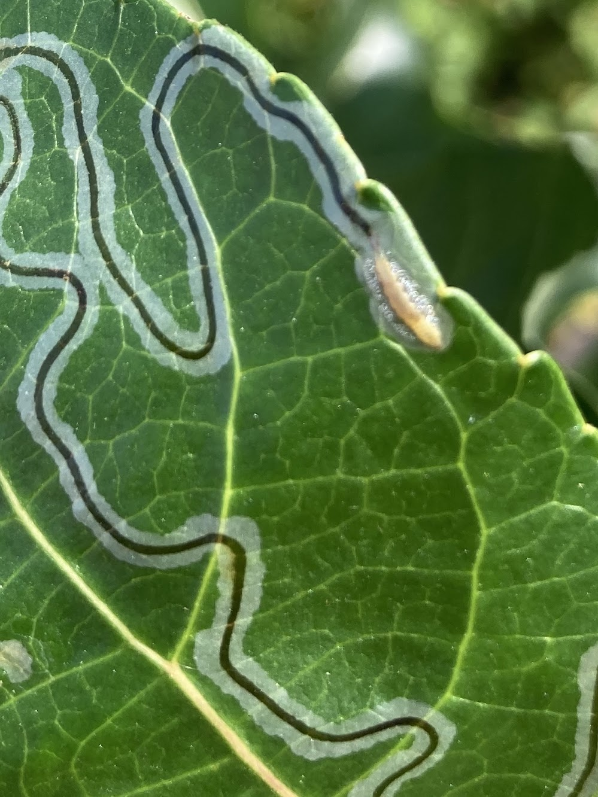
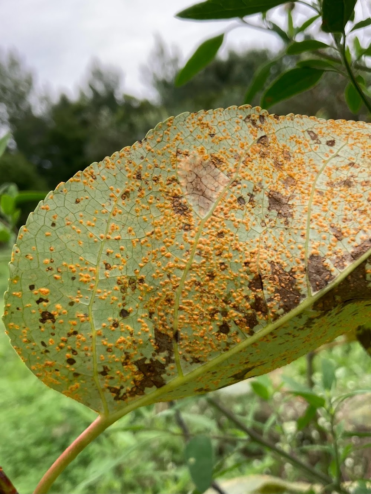
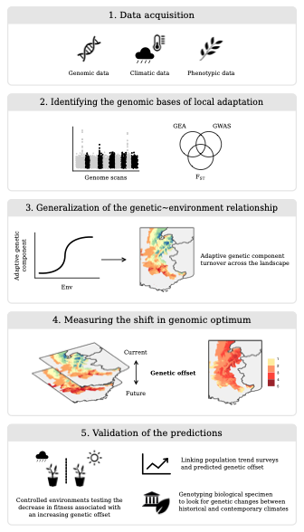
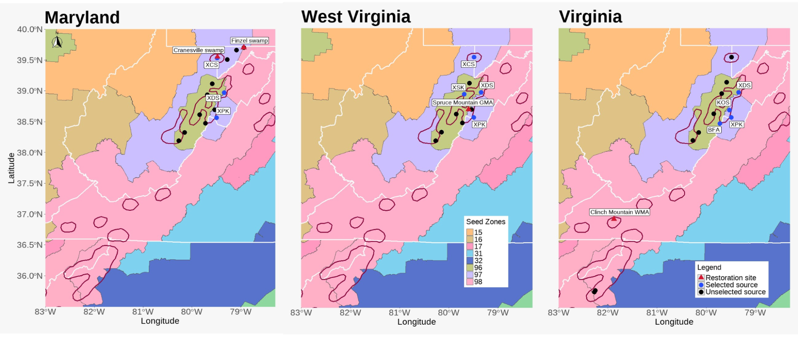

Adaptation and response to environmental change
~ the questions that drive us

Hybridization and Adaptive Introgression
Status: Ongoing | Publications
While we often think of species as being reproductively isolated from one another, this is not always the case. As a consequence of weak reproductive barriers, members of different species can interbreed in nature. When hybrids between two species are fertile, hybrids may then interbreed with members of the original species in a process known as backcrossing. Multiple generations of hybridization and subsequent backcrossing can facilitate the exchange of genetic material between parental species, a process known as introgression. Much of the research conducted in the Keller lab aims to understand if this exchange of genetic material is an adaptive process. For example, does genetic variation that increases tolerance to environmental stress in one species play the same role when it is introgressed into another species?
One current area of interest in the Keller lab is the susceptibility of hybrid poplars to infection by rust fungi in the genus Melampsora. One overarching question in the lab that this work addresses is the relationship between hybridization and local adaptation. The potential roles of ancestry and adaptation to local climatic variables as indicators of disease susceptibility in common garden experiments are being investigated.
Poplar hybridization in the Pacific Northwest. 



Genomic Forecasting
Status: Ongoing | Publications
Forecasting the responses of populations to climate change is a complex but important issue to understand as we face the potential for widespread climate maladaptation in the coming decades. This hits especially hard for long-lived, sessile organisms like forest trees, whose long-generation times and limited dispersal potential constrain the ability to adapt or track shifting climate. Recently, there has been increasing interest in combining genomics with climate models to forecast the short-term impacts of climate change on population adaptation. Our lab, in close collaboration with Matt Fitzaptrick’s lab has been developing computational approaches to predict near-term disruption of climate adaptation and predicted loss of local adaptation, known as “genomic offset” modelling.
Since first introducing the concept and statistical framework for genomic offset (Fitzpatrick and Keller 2015), we have worked to refine and extend the scope and application of genomic offset models (Keller et al. 2017; Gougherty et al. 2018; Capblancq et al. 2020; Lachmuth et al. 2023; Eco Mon). We have also been working to address some of the sources of uncertainty using truth-known simulation testing of genomic offset predictions (Laruson et al. 2022), in collaboration with Katie Lotterhos’ lab, as well as testing the sensitivity various model choices such as the choice of genomic loci, the set of climate variables, and choice of future climate projection scenarios (Lachmuth et al. 2023, Frontiers).
Ultimately, the determination of whether offset models are any good will have to be done under natural settings using carefully designed validation tests with real populations. Our lab has been working on empirical testing of offset predictions, using a space-for-time approach that evaluates the effect of transferring genotypes from their source climate into one or more common garden sites, and predicting growth and fitness-traits from genomic offsets calculated between the source and garden site climates. Using poplar trees as a study system, we provided the first such common garden test of offset predictions, showing a strong negative response of growth with increasing genomic offset (Fitzpatrick et al. 2021). More recently, we’ve shown a similar result in red spruce (Picea rubens) across 3 seedling common gardens (Lachmuth et al. 2023; Eco Mon), as well as in a 60 year old red spruce provenance trial in northern New Hampshire (Verrico et al., in prep.).
Genomic forecasting workflow. 
Conservation Genetics
Status: Ongoing | Publications
Alpine project
TNC work
One of the biggest aims of Keller lab is to disseminate the findings of the scientific research to the broader community as well as to help inform conservation and restoration efforts on the ground. In this pursuit, Keller lab has partnered with The Nature Conservancy, Central Appalachian Spruce Restoration Initiative (CASRI), …… UMCES folks. Some of the major conservation genetics research carried out by the Keller lab are listed below:
The alpine project details: Steve
Spruce orchard??
Wind power and bats: ?? UMCES lab
Go chronologically??
Any other works that keller lab is/was involved in
Kathryn Shallows from TNC approached the Keller lab in 2019 regarding red spruce restoration towards the southern range edge of its distribution, mainly in Maryland, Virginia and West Virginia. This led to a larger partnership that culminated in genomic assisted seed source selection for the restoration initiative at these sites. Instead of opting for a single source restoration initiative, we used a multiple seed source approach to improve the genetic diversity of the restoration stands to withstand the changing climate and environmental stressors. This source selection was carried out in the light of research done by Keller lab using the exome capture data and the common gardens set up at Vermont, Maryland and North Carolina. Three to four sources combinations per restoration site were selected for high genetic diversity and low genetic load. Capblancq et al. (2021) has observed that early-life fitness of the red spruce had strong positive association with genetic diversity and negative association with genetic load, especially for the southern range edge of the red spruce distribution range. These seed source combinations were used as a recommendation list to Dave Seville (CASRI) to assess the seed production situation on the ground and raise them in the nursery for the restoration initiative. In 2021, TNC planted 58,000 red spruce seedlings at the restoration sites. Keller lab then carried out the restoration monitoring of these restoration sites in 2022, a whole year after the seedlings had been planted in the ground to assess the success of genomic assisted restoration of red spruce. Using this information, Prakash et al. (in prep) found that there were no “Super Seed Source” that outperformed other seed sources and the combination of seed sources outperformed any single source for the restoration success.

Invasions
The movement of species into new habitats allows populations that were previously geographically isolated to reproduce with each other and create novel genotypes through hybridization. Through environmental selection, novel genotypes can result in phenotypes that increase hybrid fitness and promote biological invasions. Furthermore, hybridization between genetically distinct species can result in changes to the genome size or species ploidy, which can alter the reproduction rate and promote invasion success. The rapid evolution of hybrid species in the introduced range can lead to a drastic shift in the stable state dynamics of the ecosystem, transforming the community assembly.
Past research has largely focused on the effects of hybridization in Centaura × moncktonii (C. jacea × C. nigra), a plant invasive to North America known as Japanese knapweed. Using a combination of field collections at hybrid zones in eastern North America and the Pacific northwest.
An assessment of the genome size, degree of introgression, and species traits reveals that hybrid individuals have smaller genomes and capitula traits that promote reproductive success, indicating that admixture of C. jacea and C. nigra can generate invasive genotypes that are environmentally selected for.